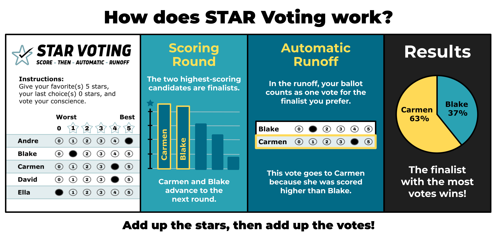

Voting Method
First, winner for 'Best in Show' is decided using the STAR voting system
In STAR (Score Then Automatic Runoff), firstly the total score for each candidate is added up
and two finalists with the highest scores are selected
Then an Automatic Runoff occurs where the finalist that is preffered (higher score) on the most number of ballots wins
After the winner for'Best in Show' is decided, their scores for the all categories on all ballots are not considered any more
Then the next most important category is determined. This is the category in which the two finalists have the highest z-scores
For that category, the winner is determined via STAR. The winner's scores on all categories on all ballots are not considered any more
The next most important category is determined as the one where the two finalists have the highest z-scores. And so on
